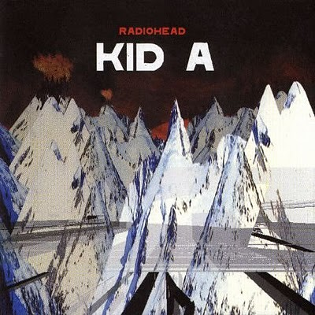
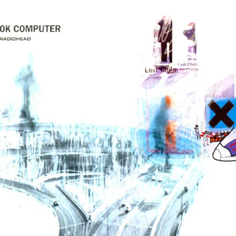
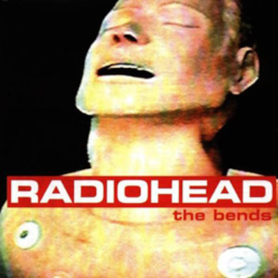

5 - Kid A (2000)
Excelente disco com faixas bem experimentais e criativas, porém peca em algumas partes, músicas como "Treefingers", "In Limbo" e "Untitled" que são claramente o ponto fraco da obra. Em contraponto, Kid A possui grandes músicas marcantes de toda a carreira de Radiohead, como "How to Disappear Completely", "The National Anthem", "Everything In Its Right Place" e também a belíssima e criativa faixa "Idioteque".
- Melhor Música: How to Disappear Completely
- Ponto Fraco: Treefingers
4 - Hail To The Thief (2003)

Um grande disco muito subestimado da carreira do Radiohead, conta com um estilo suave, caótico e experimental em sua composição, percebe-se em diversas faixas bem criativas, "2 + 2 = 5" "Sail To The Moon" e "There, There" são o ponto forte desse álbum. Em geral, todas as músicas merecem a atenção, um disco com poucos aspectos negativos, destacaria apenas "We Suck Young Blood" e "The Gloaming" ficando abaixo da média em comparação às outras faixas.
- Melhor Música: There, There
- Ponto Fraco: We Suck Young Blood
3 - Ok Computer (1997)
Um verdadeiro clássico da música de todos os tempos, Ok Computer revoluciona a forma de criar música magistralmente. O álbum contém vários clássicos da banda, como "Paranoid Android", "Karma Police" e "No Surprises", e vale o destaque para várias outras faixas impecáveis: "Airbag", "Lucky" e "The Tourist". Como se não bastasse, o disco ainda possui a emocionante "Let Down" e a assombrosa "Exit Music (For a Film)". Um disco para ser lembrado a vida toda.
- Melhor Música: No Surprises
- Ponto Fraco: Fitter Happier
2 - The Bends (1995)
A maior complicação desse ranking é colocar The Bends acima de Ok Computer, mas considero The Bends o segundo melhor disco do Radiohead por conta da sua constância. O disco não possui sequer uma faixa ruim, é uma música melhor do que a outra, de porradas como "The Bends", "Bones", "My Iron Lung" e "Just", para as encantadoras "High and Dry" e "Fake Plastic Trees". O disco inteiro é impecável, vale muito destacar a belíssima "Black Star" e também "Sulk" e "(Nice Dream)". E para fechar esse álbum clássico com chave de ouro, a incrível e melancólica "Street Spirit (Fade Out)".
- Melhor Música: Black Star
- Ponto Fraco: Bullet Proof... I Wish I Was
1 - In Rainbows (2007)